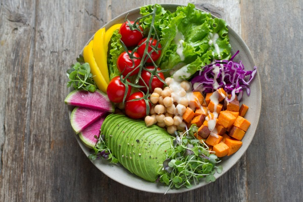
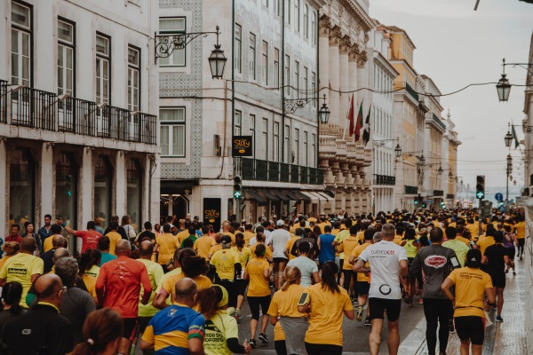

projects for 2019
coding
I am currently learning to code with the help of CodeDoor and Udacity. In 2019, apart from finishing my Frontend Nanodegree at Udacity, I also want to learn Backend Development and Web Design.
nutrition
I am also currently studying to become a certified nutritionist. Health and food are part of the same equation and I am passionate about helping people to achieve their health goals while eating the most delicious meals possible.
learning & teaching
Since learning new things is my favorite pastime, I am really enjoying my full time job at the german national library, where every book I will ever need is directly at hand. But in 2019 I would love to combine my passion for learning with my interest for teaching. Wouldn't it be great if I could instill in others my joy of learning new things like coding?
running
In 2014 I ran my first half marathon. One knee operation later I am again dreaming of achieving this goal. In 2019 I want to cross this magical finish line again!
about me
profile
I always pause for a moment when people ask me what my profession is, because I never know what my first answer should be. Because my profession always is the work I am currently doing. I am simply interested in so many things and the more I improve my skills in a certain area of work, the more I love doing this work. I was a film scientist, a film critic, a festival organiser, a teacher, a museum guide, an editor and a translator and now I am a librarian and and a customer service representative. Next year I might become a frontend web developer and a nutritionist. I am able to learn nearly anything. So, I am a professional generalist.
employment
Apr. 2018 - present
Librarian
German National Library Frankfurt
Feb. 2018 - present
Customer Service Representative
Senckenberg Museum Frankfurt
May 2011 - Jun. 2017
Museum's Instructor/Educator
Cathedral Museum Mainz
Jan. 2007 - Oct. 2009
Freelance Editor
Apr. 2004 - Oct. 2008
Online Editor and Film Critic
Cinefacts GmbH
May 2003 - Feb. 2008
Film Festival Organizer
FILMZ - German Film Festival Mainz
Oct. 2001 - Apr. 2005
Magazine Editor
STUZ - Student Newspaper JGU Mainz
Jun. 2001 - Aug. 2007
Employee at several student film productions
JGU Mainz
education
Oct. 2001 - Apr. 2011
Magistra Artium (1.3)
Johannes Gutenberg University Mainz
→ Film Science
→ Journalism Communication Studies
→ Art History
Sep. 1999 - Sep. 2001
Philipps Universität Marburg
→ Art History
→ Graphic Art and Painting
→ Media Studies
skills
→ Highly adaptable to different working conditions
→ Strong Communicator, written and orally
→ Very reliable, self-disciplined and effective
→ Years of great experience with teamwork
→ Very high self-motivation when it comes to learning new skills
→ Good working knowledge of Microsoft Office
→ Basic knowledge of CSS | HTML | JavaScript | Python
languages
→ German | native speaker
→ English | fluent
→ Spanish | very good command
→ French | basic communication skills